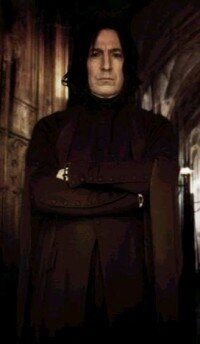
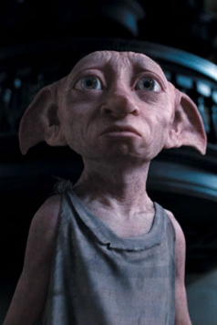
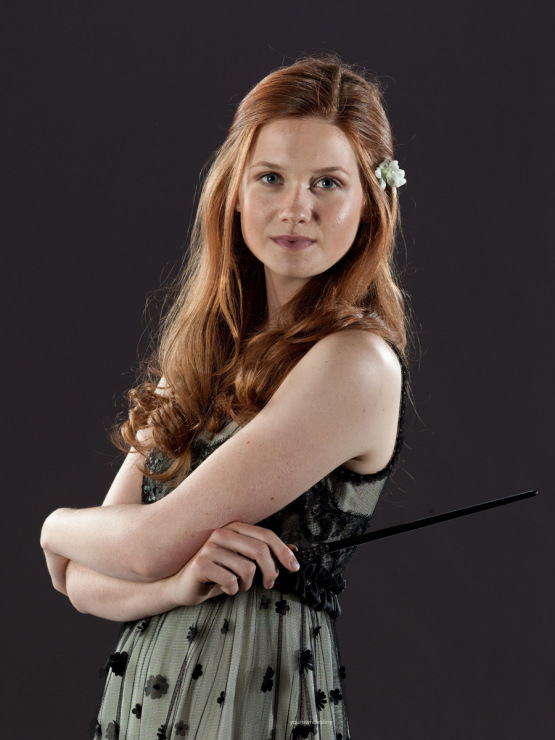

Снейп
Професор, Директор школи магії.

Добби
Ельф, що врятував Гаррі Поттера.

Джінні
Сестра Рона, жінка Гаррі Поттера.
Історія
Історія описує події у Школі Чарів і Чаклунства Гоґвортс, де його найкращими друзями є чарівники Рон Візлі і Герміона Ґрейнджер. Його найцікавішою особистою прикметою є шрам у вигляді блискавки на лобі, який з'явився, коли Темний Лорд Волдеморт спробував вбити Гаррі ще малям, застосувавши закляття смерті Авада Кедавра. Волдеморт також, крім багатьох непокірних, вбив батьків Гаррі і зруйнував їхній будинок 31 жовтня 1981 року. Гаррі є знаменитим на увесь чаклунський світ через те, що він був єдиною особою, яка вижила після Авада Кедавра і цим спричинила крах Лорда Волдеморта.